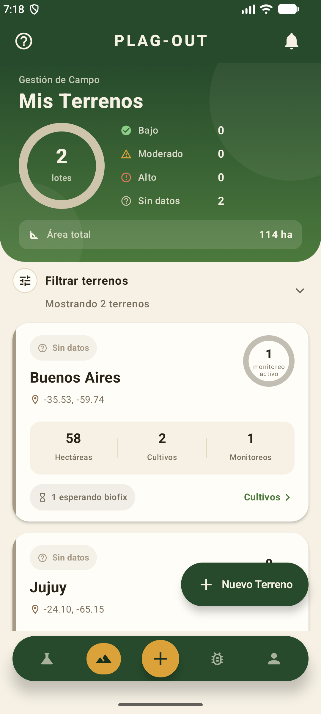
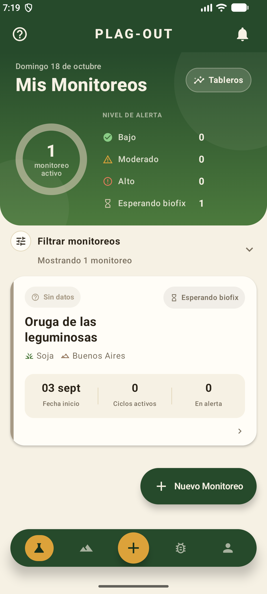
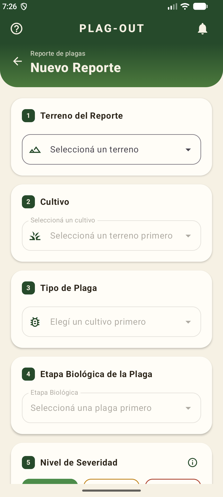
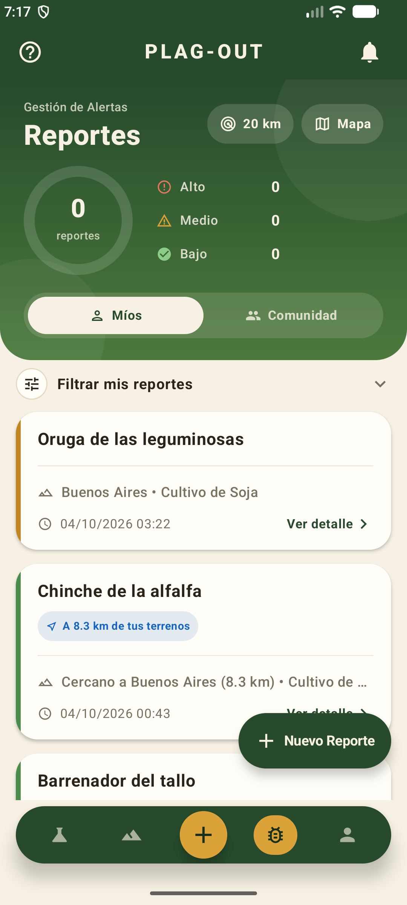
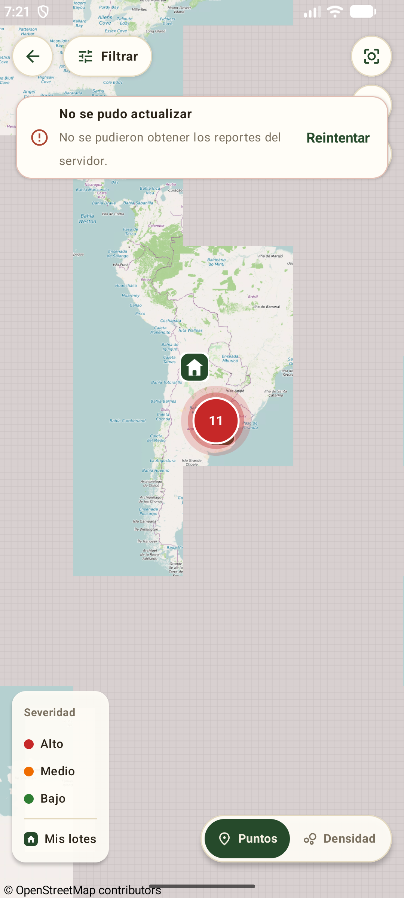
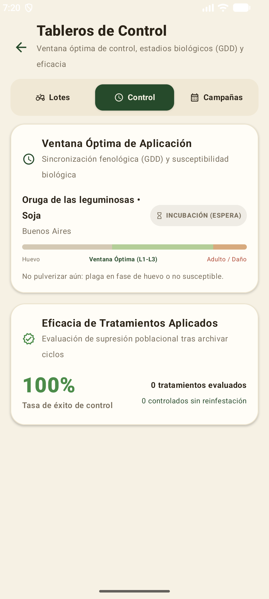
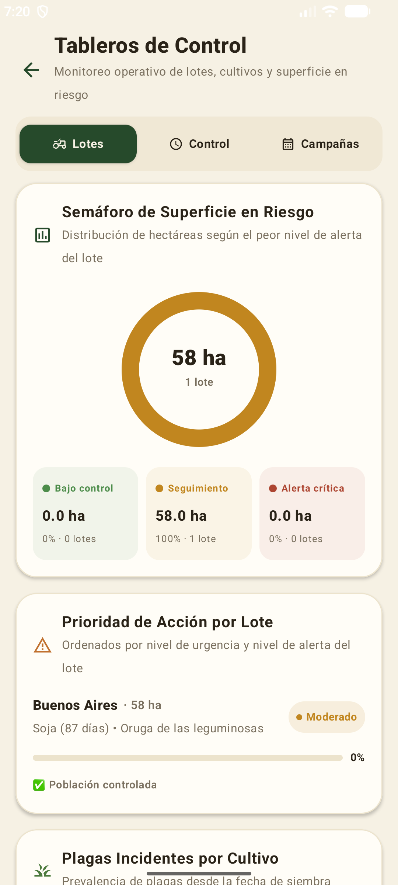
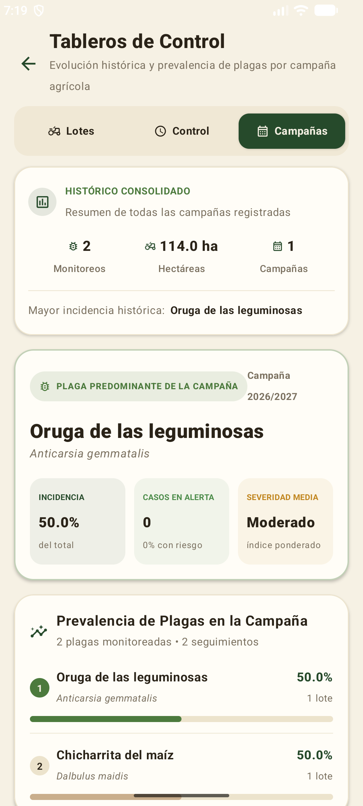

PLAG-OUT
Monitoreo inteligente de plagas sincronizando biología, clima y comunidad.
"La inteligencia artificial acota el riesgo; el campo confirma."
-USD 2.000M
Pérdidas directas en maíz en la última campaña por Dalbulus maidis (chicharrita).
El Problema
El monitoreo tradicional llega tarde: cuando la hoja está comida, pulverizar cuesta el doble y rinde 10-20%.
La Solución
Predecir el momento exacto de nacimiento integrando Grados Día (GDD), IA y red comunitaria.

Creación de Cuenta y Onboarding
Diseño accesible para el entorno rural: dos niveles de guía según la necesidad.
📘 Doble Nivel de Acompañamiento Pedagógico
La aplicación resuelve tanto la urgencia operativa a campo como la profundización agronómica del ingeniero.
❓ Guía Rápida (AppBar)
5 pasos concretos para arrancar en minutos: Cargá lotes ➔ Sumá cultivos ➔ Monitoreá ➔ Confirmá biofix ➔ Reportá.
🔬 Guía Completa (Ajustes)
Explicación científica: qué son los GDD, el biofix como punto cero, el Índice de Riesgo Ambiental (IRA) y los niveles del semáforo.
🔐 Registro Seguro
Autenticación con validación instantánea y tokens JWT con revocación automática.
🌾 Enfoque Práctico
Textos directos en lenguaje agronómico argentino, sin tecnicismos informáticos vacíos.

Terrenos, Cultivos, Monitoreos y Ciclos
Estructuración jerárquica con anclaje bioclimático y arquitectura Offline-First.
🌱 La Jerarquía Productiva en Campo
Terreno (Lote GPS + Ha) ➔ Plantación (Cultivo + Fecha Siembra) ➔ Monitoreo (Plaga + Umbral) ➔ Ciclos Térmicos.
📍 Vínculo Bioclimático
Coordenadas GPS exactas vinculadas a estaciones meteorológicas para tomar temperaturas locales reales.
⏳ Fecha de Siembra
Cálculo de días transcurridos para correlacionar la fenología del cultivo con estadios de plagas.
🎯 Umbral Personalizado
El productor define a qué nivel de acumulación térmica o riesgo ambiental quiere ser alertado.
📡 100% Offline-First
Persistencia local con Room ORM. El agrónomo carga datos sin señal y se sincronizan al volver a tener 4G.

Reporte a Campo & Machine Learning
Digitalización del scouting y predicción inteligente del biofix biológico.
🤖 El Rol del Modelo de Machine Learning en el Biofix
Analiza series de temperatura de los últimos 60 días, anomalías térmicas invernales y fotoperíodo para predecir la ventana de emergencia de adultos hasta 14 días antes.
📸 Scouting Digital
Registro de plaga, estadio (ninfa/adulto), severidad, fotos georreferenciadas y notas agronómicas.
🔄 Bucle de Feedback Activo
La IA sugiere; el agrónomo confirma o refina la fecha en el lote. La retroalimentación recalibra el modelo.
⚡ Activación del Reloj Térmico
Al confirmar el biofix, se inicia la acumulación diaria de GDD hacia el umbral de eclosión.
📡 Disparo Comunitario
El reporte confirmado se propaga en la red para advertir a los campos vecinos en el anillo.

Alerta Comunitaria en Tiempo Real
Defensa en anillo de 20 km y efecto de red colaborativo entre vecinos.
🛡️ Principio de Defensa en Anillo (20 km)
Los insectos se desplazan con el viento. Una detección a 8.3 km es el aviso anticipado de que la presión biológica regional aumentó.
🔔 Notificación Push Inmediata
Despacho directo por Firebase Cloud Messaging ni bien el vecino confirma el avistamiento.
🌐 Efecto de Red
+Productores monitoreando ➔ +Datos georreferenciados ➔ Alertas más precisas para toda la cuenca.
🔒 Ley 25.326 de Protección de Datos
Anonimización estricta: se informa la distancia radial difusa, protegiendo el catastro del vecino.
🚜 Coordinación Zonal
Permite alertar a contratistas y acopios antes de que la plaga cruce el alambrado propio.

Valores Avanzados de GDD & Motor Diario
El reloj biológico térmico lote por lote y el pipeline batch automatizado.
🌡️ La Ecuación Fisiológica de Grados Día (GDD)
GDD = ((Tmax + Tmin) / 2) - Tb | Calibrada para Argentina: Tb = 10°C (Anticarsia/Dalbulus), eclosión a 420 GDD.
⚙️ Job Nocturno en Backend
Batch autónomo que ejecuta a las 03:00 AM: consulta Open-Meteo y SMN por coordenadas de cada lote.
📊 Integral Térmica Diaria
Suma los GDD acumulados y recalcula el Índice de Riesgo Ambiental (IRA) de cada monitoreo.
📲 Alertas Tempranas
Si el lote cruza el umbral definido por el agrónomo, despacha notificación push a primera hora.
🔬 Calibración INTA
Modelos ontogénicos validados con estaciones experimentales agropecuarias nacionales.

Mapa de Presión por Zona
Cartografía espacial con clusterización de focos y mapa de calor de densidad.
🗺️ Detección de Focos de Calor Epidemiológicos
Clusterización nativa sobre OpenStreetMap (OSMDroid): agrupamiento dinámico que revela focos calientes en la cuenca agrícola.
🔴 Cluster Zona Núcleo
Identificación instantánea de 11 reportes activos agrupados a corta distancia del establecimiento propio.
🏠 Ubicación de Lote Propio
Marcador de referencia territorial para medir el gradiente de proximidad del frente de plaga.
🔥 Puntos vs Mapa de Calor
Conmutación en un toque entre marcadores individuales de scouting y mapa continuo de densidad poblacional.
🧭 Vector de Avance
Correlación visual entre focos comunitarios y condiciones meteorológicas de dispersión.

Tableros de Control Ejecutivos
Semáforo de superficie, la Curva de Eficacia fitosanitaria y memoria interanual.
📉 "Errar la Ventana se Paga Caro" • Curva de Eficacia
Temprana (Huevo): 10-20% de eficacia (plata tirada) ➔ Ventana Útil (L1-L3): >90% de eficacia ➔ Tardía (L5/Adulto): 20-30% de eficacia (daño irreversible).
🟢 Solapa Lotes (Productor)
Semáforo Donut (58 ha), ranking de criticidad y días desde siembra (ej. Soja 87 días en etapa sensible).
🛡️ Badge Disuasorio
Cartel 'INCUBACIÓN - No pulverizar aún': evita aplicaciones a destiempo que destruyen rinde y margen.
📜 Solapa Campañas (Histórico)
Auditoría interanual 2026/27: Oruga predominante (50%). Planificación de compras tempranas con descuento.
🧪 Rotación IRAC
Datos objetivos para alternar modos de acción químicos y evitar la resistencia biológica en el lote.
Perfil, Permisos y Consentimiento ML
Control ético de datos, soberanía del productor y permisos de sistema.
🛡️ Transparencia y Consentimiento Informado
El productor es el único dueño de su información agronómica. No entrenamos algoritmos a sus espaldas.
🔔 Control de Notificaciones
Switch nativo vinculado a Firebase Cloud Messaging para registrar o dar de baja el token FCM.
📍 Permiso de Ubicación
Monitoreo continuo de permisos de GPS en Android con revalidación y acceso directo a ajustes del sistema.
🤖 Switch Consentimiento ML
Opt-in/Opt-out granular: el usuario autoriza o revoca el uso de sus reportes para calibrar modelos de IA.
🔒 Seguridad de Sesión
Tokens JWT con cierre de sesión seguro y protección contra pérdida de credenciales.

Escalabilidad del Catálogo Biológico
Alta dinámica de nuevas especies y cultivos sin dependencias de desarrollo.
🧬 Extensibilidad Modular sin Despliegue de Código
El catálogo biológico no está 'hardcodeado'. Nuevas plagas o biotipos resistentes se configuran en caliente desde la base central.
🐛 Parámetros Ontogénicos
Configuración de Temperatura Base (Tb), umbral superior (Tcorte) y constantes térmicas (K en GDD).
🌾 Asociación con Cultivos
Vínculo con hospederos: Soja, Maíz, Sorgo, Alfalfa, Trigo, Girasol y pasturas consociadas.
⚡ Propagación Instantánea
Al guardar, el nuevo modelo biológico queda disponible de inmediato para todos los productores.
📁 Archivo y Versionado
Posibilidad de archivar plagas estacionales o ajustar umbrales ante nuevas recomendaciones de INTA.

Gestión de Usuarios y Gobernanza
Control de accesos basado en roles (RBAC) y auditoría institucional.
👥 Administración Institucional y Auditoría
Estructura pensada para cooperativas, acopios y pools de siembra con múltiples niveles de operadores.
👨🌾 Roles Jerárquicos
Productor estándar (gestión de campo), Ingeniero Agrónomo (validación de biofix) y Administrador.
🔒 Estados de Cuenta
Activación, suspensión preventiva y control de acceso mediante tokens revocables.
🏢 Soporte Multiestablecimiento
Habilitación de técnicos para monitorear múltiples campos bajo un mismo esquema de auditoría.
📜 Trazabilidad de Acciones
Registro auditado de quién cargó cada reporte y quién confirmó la eclosión a campo.
Dashboards Globales de Administración
Inteligencia epidemiológica agregada para cooperativas y organismos fitosanitarios.
📈 De la Parcela Individual a la Epidemiología Regional
Visión macro que permite detectar tendencias, brotes incipientes y velocidad de dispersión geográfica de plagas.
🗺️ Superficie Zonal Bajo Vigilancia
Consolidado en tiempo real de hectáreas activas por región agrícola (NOA, NEA, Zona Núcleo, Sur).
📊 Velocidad de Propagación
Métrica de dispersión basada en reportes comunitarios y anomalías térmicas recientes.
🌾 Cultivos más Afectados
Distribución de presión sanitaria para planificar abastecimiento temprano de biológicos e insumos.
🏛️ Alianzas Estratégicas
Información de alto valor para articular alertas tempranas con INTA, SENASA y mesas técnicas.
Ecosistema Multiplataforma: Mobile vs Web
Sinergia entre el trabajo rústico a campo y el análisis gerencial en oficina.
🚜 Complementariedad Operativa según el Escenario
Dos clientes optimizados para su entorno de uso que consumen la misma API REST asíncrona.
📱 Android Nativo (Campo)
Uso en camioneta bajo el sol, botones amplios, cámara rápida, GPS nativo y tolerancia offline 100% con Room.
💻 Portal Web (Oficina)
Pantalla grande para visualización cartográfica, gestión masiva de lotes, auditoría y exportación de informes BPA.
⚡ Backend Unificado
FastAPI asíncrono en Python 3.11 con endpoints RESTful unificados y esquemas Pydantic compartidos.
🌍 PostGIS Central
PostgreSQL espacial con índices R-Tree para resolver consultas de proximidad instantáneas en ambos clientes.
PLAG-OUT: Nosotros Anticipamos
Tres pilares de retorno medible para el productor y el medio ambiente:
-25%
Costos Fitosanitarios
Al eliminar aplicaciones fuera de ventana en estadios invulnerables.
+7 a 14 Días
Anticipación Bioclimática
Para contratar pulverizadoras y coordinar insumos sin urgencias.
100%
Trazabilidad Digital
Registro auditable de aplicaciones para certificar Buenas Prácticas Agrícolas.
🎯 Diferenciación Clave vs xarvio, Auravant y FieldView
Las plataformas existentes son reactivas (alertan cuando el satélite ve la hoja comida o el índice verde cae). PLAG-OUT anticipa biológicamente mediante acumulación de Grados Día, IA y defensa comunitaria antes de que la plaga nazca.
¡Muchas Gracias!
Abrimos la sesión para preguntas de la mesa evaluadora.
Dinámica y Ecuación GDD
Ver fórmulas térmicas, Tb, constantes K y calibración INTA.
Modelos y Curva de Eficacia
Ventana óptima L1-L3 vs huevo/adulto y parámetros por especie.
Arquitectura & Offline
Room SQLite, WorkManager, FastAPI y PostgreSQL/PostGIS.
Machine Learning Biofix
Features climáticas, modelo supervisado y bucle de feedback.
Job Diario & Notificaciones
Scheduler nocturno, Open-Meteo y despacho masivo FCM.
Geoprivacidad & Ley 25.326
Buffer espacial difuso de 20 km y consentimiento ético.
GDD = ((Tmax + Tmin) / 2) - Tb
• Tmin ≥ Tb: Si la temperatura no supera Tb, GDD = 0.
• Tcorte: Límite fisiológico superior (32°C - 35°C).
• Constante K: Σ GDD necesarios para completar la fase.
• Calibración: Ensayos empíricos INTA Pergamino/Manfredi.
Dinámica y Fórmulas de Grados Día (GDD)
Fundamentos matemáticos y biofísicos de la acumulación térmica en artrópodos.
📐 Naturaleza Poiquilotérmica de los Insectos
Los insectos carecen de regulación térmica interna. Su tasa metabólica y velocidad ontogénica son directamente proporcionales al calor acumulado por encima del umbral basal ($T_b$).
🌡️ Temperatura Base ($T_b$)
Umbral térmico inferior por debajo del cual el desarrollo fisiológico celular se detiene por completo (diapausa).
📈 Integral Térmica ($K$)
Cantidad fija de calor fisiológico requerida: $K = \sum (T_{\text{media}} - T_b) \cdot \Delta t$.
❄️ Desvíos Térmicos Invernales
Las anomalías cálidas de invierno aceleran la salida de diapausa, adelantando la primera generación estival.
🏛️ Ground Truth INTA
Validación de curvas térmicas contra registros fenológicos de estaciones experimentales en Argentina.
| Especie | Tb | K (GDD) | Crítico |
|---|---|---|---|
| Dalbulus maidis | 10°C | 420 | V1 - V6 |
| Anticarsia gemm. | 10°C | 380 | R1 - R5 |
| Spodoptera frug. | 12°C | 350 | V2 - V8 |
Modelos Fenológicos y Ventanas de Eficacia
Biofísica de la susceptibilidad ontogénica y reducción del impacto químico.
🎯 Por qué Falla el Control Fuera de la Ventana
En huevo o adulto se desperdicia el 80% del producto fitosanitario. Solo en estadios larvales tempranos (L1-L3) se alcanza el 90-95% de mortandad con mínimas dosis.
🥚 Huevo (Incubación)
Corion impermeable a insecticidas de contacto. Aplicar acá destruye parasitoides benéficos y no mata la plaga.
🐛 Larva Chica (L1 - L3)
Cutícula permeable, alimentación foliar voraz y máxima susceptibilidad a dosis reducidas de IGR o Bt.
⚠️ Larva Grande / Adulto
Ingreso en cogollo o vainas, cutícula endurecida y detoxificación enzimática activa. Daño ya producido.
🌱 Etapas Críticas del Cultivo
Vincular la eclosión con V1-V6 en maíz o R1-R5 en soja evita la pérdida irreversible de componentes del rinde.
• Frontend: Android Kotlin • Jetpack Compose • Material 3
• Local DB: SQLite • Room ORM • StateFlow
• Offline Sync: WorkManager • Exponential Backoff
• Backend: FastAPI • Python 3.11 • AsyncIO
• Cloud DB: PostgreSQL 15 • PostGIS Espacial
• Spatial Query: ST_DWithin con índices GIST (R-Tree)
Arquitectura General & Resiliencia Offline
Diseño desacoplado, persistencia transaccional y consultas espaciales de alta performance.
📡 Resiliencia en Ambientes Rurales Sin Conectividad
El cliente móvil es 100% operativo sin internet. Las acciones de campo se registran localmente y se sincronizan de forma idempotente al restablecerse la red.
💾 Room + UUID Local
Generación de UUIDs en cliente y persistencia previa con estado PENDIENTE_ENVIO antes de intentar la red.
🔄 WorkManager Sync
Gestión de reintentos exponenciales garantizando que no se dupliquen reportes ni se pierdan datos.
⚡ FastAPI Asíncrono
Procesamiento concurrente no bloqueante capaz de manejar miles de peticiones simultáneas con bajo consumo.
🌍 PostGIS ST_DWithin
Búsqueda espacial indexada sobre coordenadas esféricas para calcular el radio comunitario en menos de 5 ms.
• T_mean_7d, 15d, 30d: Inercia térmica acumulada.
• Días_Tmin > 15°C: Supervivencia invernal.
• Fotoperíodo: Horas de luz según latitud.
• Precipitación 30d: Humedad para eclosión.
• Presión Zonal previa: Histórico de cuenca.
• Métrica: AUC-ROC > 0.88 en validación cruzada.
Modelo de Machine Learning para Biofix
Predicción bioclimática temprana y aprendizaje activo supervisado por el usuario.
🧠 Anticipación a la Detección Ocular Humana
El modelo no espera a ver el insecto: predice cuándo las condiciones bioclimáticas acumuladas activan la oviposición de adultos fértiles.
📊 Algoritmo Predictivo
Ensamble de Gradient Boosted Trees (XGBoost / LightGBM) calibrado con datos meteorológicos históricos.
🎯 Detección de Inviernos Benignos
Identificación de inviernos cálidos que evitan la mortandad por heladas de la chicharrita del maíz.
🔄 Bucle Activo de Feedback
Cada confirmación o corrección del agrónomo genera un registro FeedbackPrediccion para reentrenar pesos.
⚖️ Humano en el Centro
La IA emite una recomendación probabilística; la decisión de inicio del ciclo recae siempre en el profesional.
03:00 AM: Trigger Cron en Backend
➔ Clustering GPS: Agrupación de lotes cercanos
➔ Async HTTP: Consulta concurrente Open-Meteo / SMN
➔ Cálculo GDD: Actualización masiva en PostgreSQL
➔ Evaluación IRA: Chequeo de umbrales por usuario
➔ Push FCM: Despacho masivo antes de las 07:00 AM
Pipeline del Job Diario & Notificaciones FCM
Automatización batch nocturna, integración meteorológica y despacho masivo push.
🌙 Eficiencia Energética y de Red
El procesamiento pesado ocurre en el servidor durante la noche. El teléfono del productor no consume batería calculando integrales térmicas.
⚡ Consultas Asíncronas
Llamadas concurrentes con httpx.AsyncClient para descargar datos meteorológicos en paralelo en segundos.
📍 Deduplicación por Coordenadas
Si varios lotes comparten la misma estación meteorológica, se realiza una única petición a la API externa.
🔔 Firebase Cloud Messaging
Tokens FCM registrados en backend. Despacho segmentado por lote y topics regionales de emergencia.
🔋 Cero Impacto en Batería
La app despierta solo para renderizar la alerta, sin necesidad de correr servicios en background permanentes.
• Ley 25.326: Protección de Datos Personales (Argentina).
• Buffer Difuso: Perturbación de coordenadas en capa pública.
• Cifrado: TLS 1.3 en tránsito y AES-256 en reposo.
• Tokens JWT: Sesiones seguras sin almacenar passwords.
• Consentimiento Ético: Switch opt-in para reentrenar IA.
• Derecho ARCO: Acceso, rectificación y supresión de datos.
Geoprivacidad, Anonimización y Ley 25.326
Protección de secretos comerciales y seguridad de datos en la red comunitaria.
🛡️ El Algoritmo de Perturbación Espacial (Buffer Difuso)
La comunidad se beneficia de la alerta temprana regional sin que ningún productor exponga la ubicación exacta de su potrero.
📍 Coordenadas Segregadas
La geolocalización exacta del catastro vive únicamente en la cuenta privada del titular del establecimiento.
🎲 Difusión Aleatoria
Para la alerta zonal, el backend aplica una dispersión radial aleatoria que impide la triangulación inversa.
📜 Cumplimiento Ley 25.326
Garantía de confidencialidad de la información productiva y auditoría de accesos conforme a la legislación nacional.
🛑 Derecho de Revocación
El productor puede revocar en cualquier momento el consentimiento de compartir datos con un solo clic.